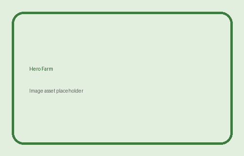

Plan smarter. Farm better.
AgroGuide Pro combines crop information, season planning, fertilizer & manpower estimators, soil suitability checks, crop comparison tools and practical farming tips — all in one accessible portal.

Popular Crops
Click "View Details" to see timeline, pests & disease tips, water needs and more.
Fertilizer & Manpower Calculator
Fertilizer Cost & Expense Estimator
Labour
Soil Suitability Checker
Choose soil and season to view recommended crops and soil suitability scores.
Season Planner
Filter crops by season to plan sowing and harvest schedule.
Crop Comparison Tool
Other Tools & Future Modules
- Pest & Disease Guide (per crop)
- Water Requirement Estimator
- Farming Timeline Generator (visual)
- Offline Rule-based FAQ Chat
- Admin Panel for crop data (JSON or backend)